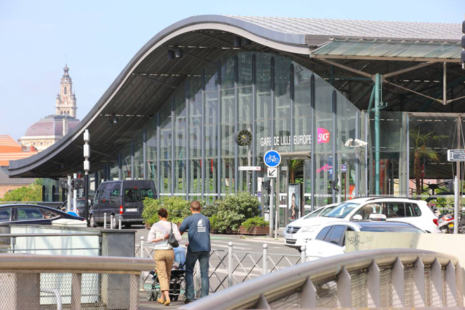
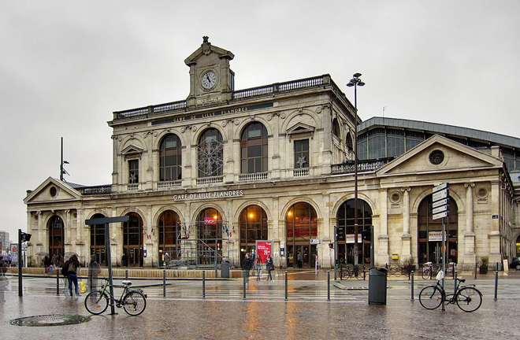
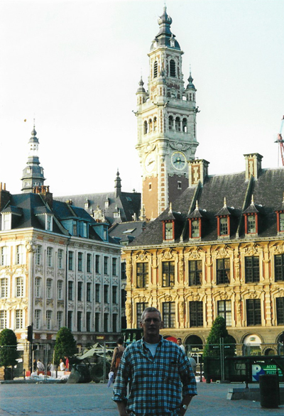
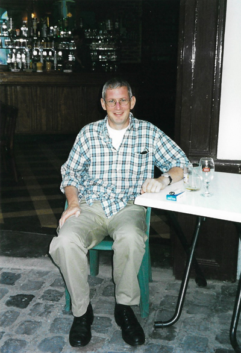
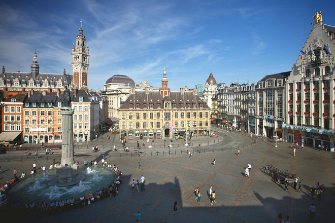
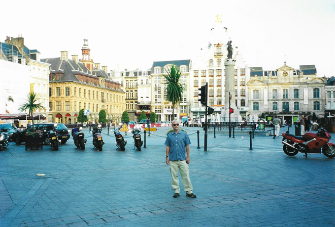
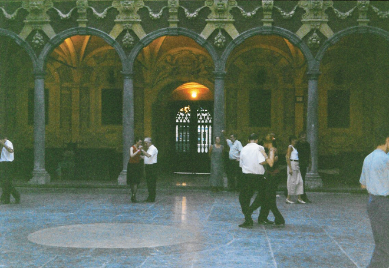
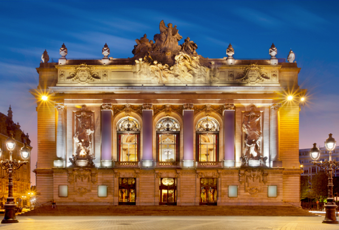

We thought we'd try a Eurostar trip to Lille since it seemed such an easy way to get to the city. We were upgraded on the outward journey and received a proper sit-down lunch which was very welcome!

Although we arrived into the Eurostar terminal, our hotel was directly opposite Lille-Flandres station which was a very attractive building.


The main square in Lille is overlooked by the 104 metre tall Belfry of the Town Hall which gives panoramic views over the local surroundings. The square itself has lots of bars serving the local beer.

The Column of the Goddess is the popular name given by the citizens of Lille to the Memorial of the Siege of 1792 which is in the centre of the Grand Place, and has been surrounded by a fountain since 1990.

We were surprised to see people doing Argentine Tango in the courtyard of the Town Hall ...

